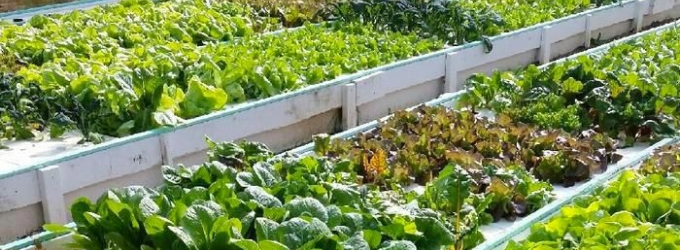
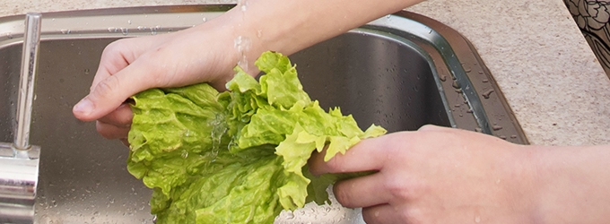
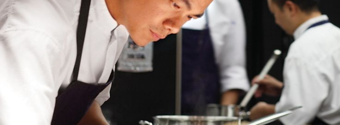

N U T R I T I O N A L
영양 클리닉
식재료 공급 과정

소중한 환우분들의 건강을 위해 농림축산식품부에서
인증한 친환경농축산물 생산업체에서 바로 재료를 공급받습니다.

전문영양사가 환우분들을 위해 청결하고, 위생적으로 식재료를 관리하며
9대 영양소, 6대 식품군에 맞춰 균형있게 식단을 계획합니다.

영양학적 지식이 풍부하고 많은 조리경력을 갖춘 전문 조리사가
우리 몸에 가장 최적화된 조리방법으로 직접 조리합니다.